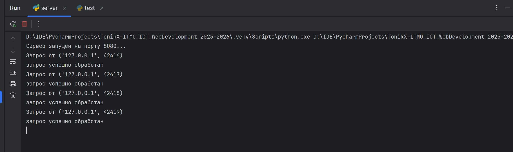

Задача 5
Цель
Написать простой веб‑сервер для обработки GET и POST HTTP‑запросов с использованием библиотеки socket.
Сервер должен уметь сохранять и отображать оценки по дисциплинам:
- через POST‑запрос добавляется дисциплина и оценка;
- через GET‑запрос отдаются все оценки в виде HTML‑страницы или JSON.
Выполнение
В этой задаче я реализовал простой сервер, который принимает подключения и определяет метод запроса, чтобы затем либо отдать сгенерированную html страницу с 200 кодом, либо распарсить параметры и добавить нужные данные в словарь оценок (при POST запросе), либо отдать 405 код с ошибкой о том, что метод недоступен.
В качестве клиента для GET запросов я как и в 3 задаче использовал браузер и вводил путь 127.0.0.1:8080.
Для POST запросов я написал файл test.py (так как в браузере для этого надо было бы отдельно создавать форму), в котором использовал библиотеку requests для отправки простых POST запросов на сервер.
Сервер
import socket
notes = {}
def generate_html():
global notes
html_content = '''<!DOCTYPE html>
<html lang="en">
<head>
<meta charset="UTF-8">
<title>Data page</title>
</head>
<body>
<h1>Task 5</h1>
<h3>made by Yriy Mihailov, ICT ITMO</h3>
<br>
<hr>
<h2>Marks for disciplines:</h2>'''
if notes:
for discipline, mark_list in notes.items():
marks_str = " ".join(str(mark) for mark in mark_list)
html_content += f'<p>{discipline}: {marks_str}</p><hr>'
else:
html_content += '<p>No marks(</p><hr>'
html_content += '</body></html>'
return html_content
server_socket = socket.socket(socket.AF_INET, socket.SOCK_STREAM)
server_socket.bind(('localhost', 8080))
server_socket.listen(5)
print("Сервер запущен на порту 8080...")
while True:
client_connection, client_address = server_socket.accept()
print(f'Запрос от {client_address}')
request = client_connection.recv(1024)
data = request.decode('utf-8')
if request.startswith(b'GET'):
html_content = generate_html()
response = (
"HTTP/1.1 200 OK\r\n"
"Content-Type: text/html; charset=utf-8\r\n"
f"Content-Length: {len(html_content)}\r\n"
"\r\n" + html_content
)
client_connection.sendall(response.encode('utf-8'))
elif request.startswith(b'POST'):
lines = request.decode().split('\r\n')
post_data = ""
for i, line in enumerate(lines):
if line == '' and i + 1 < len(lines):
post_data = lines[i + 1]
break
if 'discipline=' in post_data and 'mark=' in post_data:
params = post_data.split('&')
discipline = None
mark = None
for param in params:
if param.startswith('discipline='):
discipline = param[11:]
elif param.startswith('mark='):
mark = param[5:]
if discipline not in notes.keys():
notes[discipline] = []
notes[discipline].append(mark)
else:
response = "HTTP/1.1 400 Bad Request\r\n\r\nОтсутствуют параметры discipline или mark"
client_connection.sendall(response.encode('utf-8'))
client_connection.close()
continue
html = open("success.html", 'r').read()
response = (
"HTTP/1.1 200 OK\r\n"
"Content-Type: text/html; charset=utf-8\r\n"
f"Content-Length: {len(html)}\r\n"
"\r\n" + html
)
client_connection.sendall(response.encode('utf-8'))
else:
response = "HTTP/1.1 405 Method Not Allowed\r\n\r\nMethod not supported"
client_connection.close()
print("запрос успешно обработан")
Файл для POST запросов
import requests
payload1 = {'discipline': "math", 'mark': "5"}
payload2 = {'discipline': "math", 'mark': "2"}
payload3 = {'discipline': "linal", 'mark': "3"}
payload4 = {'discipline': "math", 'mark': "3"}
response_post1 = requests.post("http://127.0.0.1:8080", data=payload1)
print(1)
response_post2 = requests.post("http://127.0.0.1:8080", data=payload2)
print(2)
response_post3 = requests.post("http://127.0.0.1:8080", data=payload3)
print(3)
response_post4 = requests.post("http://127.0.0.1:8080", data=payload4)
print(4)
print(response_post4.text)
Результат
Перед проверкой GET запроса логично запустить тестовый файл, который запишет в журнал несколько оценок. При этом обработано также, если оценок не будет совсем - выведется No marks.

При заходе в браузер по адресу сервера (http://localhost:8080/) пользователь видит HTML‑страницу с текущими оценками:

Вывод
Реализован простой веб‑сервер на Python, который самостоятельно парсит запрос и в зависимости от его типа отдает нужные ответы с необходимыми заголовками.